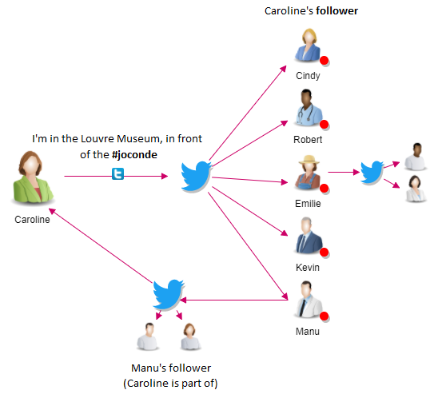

November 8th, 2016
Against all voters survey, Donald Trump becomes the 45th US president. How could it happen ?
We live in a society where social media platforms have taken a great importance. Social networks such as Facebook, Twitter or LinkedIn have become very powerful tools to spread a message. They allow a direct connection between parties or companies and citizens, and recent events such as the Arab Spring have shown they can be used as a driving force. However, in such media which favor free expression, the control is weak or inexistant and thus fake information can spread quickly, against the social good.
Definition
- What is the IRA ?
-
No, we are not talking about the Irish Republican Army, but about the Internet Research Agency, a russian compagny specialized in online propaganda. The IRA leads these compaingn to serve the Russian interests.
You might ask why we are talking about the IRA. In fact, many hypothesis might say that the IRA have been leading a disinformation campaign on Twitter against Hillary Clinton during the 2016 US elections. - And what about twitter ?
-
Twitter is an american social media used to communicate with each other by posting or interacting with messages called "Tweets". The interaction between two users can be explained as follow :
- When Caroline sends a tweet, all of his followers gets her tweet (with the red dots).
- If Emilie tweets, Caroline will not get the message, as the is not following her.
- As Caroline follows Manu, she will get his tweets.
- Caroline added an hashtag in her tweet (#joconde). An hashtag is a keyword that allows to group all the conversation talking about the same topic.
The 2016 US Elections...
You may have heard during the elections, that a lot of scandales have been divulged. Just as a reminder, we explain some of them to you.
- On Clinton's side
-
- Critisizing Trump's electorate: 09/09/2016 During a talk, Hillary Clinton sparks controversy by suggesting half of Trump's electorate belongs to "a basket of deplorables". Trump uses this to draw sympathy and to depict Clinton as someone who doesn't respect all Americans.
- Feeling unwell during commemoration ceremony: 11/09/2016 During the commemoration ceremony, Hillary Clinton is forced to leave as she is not feeling well. She is diagnosed with pneumonia. Trump uses this as an argument that Hillary Clinton is not strong enough to govern the USA.
- The Clinton emails: 28/10/2016 On March 2nd 2015, the New York Times reveals that Hillary Clinton used a private server to access her emails when she was Secretary of State, but the investigation suggest that she was merely careless and no suit is filed. However, FBI director James Comey announces 11 days before the elections that new emails have been found and so that the case will be reopened. Donald Trump will use this affair to discredit the democrat candidate.
- The pizzagate: 30/10/2016 The pizzagate conspiracy theory originates from a tweet by a laywer from New York asserting that there exists a pedophilia network around John Podesta, Hillary Clinton's compaign director. This tweet quickly became viral, and the hashtag Pizzagate appeared on November 7th on twitter (one day before the elections).
- On Trump's side
-
- Reaction to slain US army captain: 30/07/2016 Trump held disrespectful word towards the father's of a US army captain who died in Irak in 2004. The public opinion reacted strongly to the interview and many Republicans attacked him for his behavior did not correspond to their values.
- Controversy over tax returns: 01/10/2016 On begininning of October, the New York Times reveals that Donald Trump may have declared in a doubtful way the bankruptcy of his casino, which may have led to him paying less taxes. Hillary Clinton attacked the republican on his responsability in this case.
- 'Access Hollywood' tape: 07/10/2016 The Washington Post published a tape from 2005 where Donald Trump describes how he attempted to seduce a woman. He holds sexist, and degrading comments about women. The action he formulates are described as sexual assault. This leads to the loss of the support from some of his voters.